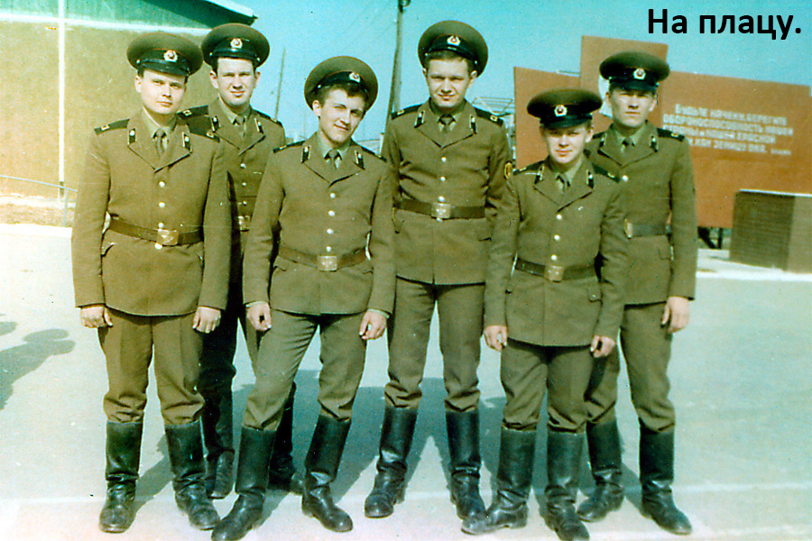

Часть 2
Снова будни«Закрасить, зашкурить и зашпатлевать»
Звенигород
Али-Баба и сорок разбойников
Путевка в пионерлагерь
Показательные политзанятия
Снова будни
После новогодних праздников - наряд на небольшой объект под Чапаевкой (или Чапаево). Зрелище забавное - поле, на краю которого стоит вентиляционная станция: мощные моторы, турбины, комнаты с герметичными дверями и штурвальными замками. Наверное, под землей - «овощехранилище». Работа не требует высокой квалификации: поотдирать вспученную шпатлевку в воздушных камерах, заделать образовавшиеся раковины и покрасить стены и воздухопроводы. Но сам объект не был интересен, а вот дорога к нему...
Минут 30 мы ехали в грузовиках от места квартирования к вент-станции через русскую глубинку. Я, не раз видевший украинское село (тех лет), не мог себе представить такого запустения и разрухи. Дома почти все деревянные, покосившиеся, зачастую с просевшей крышей. Заборы из всевозможного мусора: обрезок веток, крышек от кастрюль, сгнивших бревен. И все - серо-черное, гнилое, многие годы (а может быть и никогда) не видевшее краски. Украинская хатка-мазанка на этом фоне - просто произведения искусства: побеленная, подведенная смолой, с покрашенными резными ставнями.
Утром было видно, что поселок обитаем: женщины с ведрами шли к колодцу, пара кур перебегала дорогу перед машинами, со дворов слышался лай собак. Но вечером, часов в 7, когда мы возвращались с объекта, картина была другая: ни одно окно в поселке не светилось, люди напрочь отсутствовали на улицах. И что самое поразительное, не было слышно даже собачьего лая. Создавалось впечатление какого-то исторического музея, демонстрирующего уклад жизни в XVIII-XIX веке. И это на расстоянии менее 100 километров от столицы тогда еще супердержавы.
Работу на станции мы закончили достаточно быстро и покинули эти музейные места.
По поводу качества работы стройбата могу сказать, что бывало всякое. Иногда небольшие дыры в стенах между комнатами, если пропустили их при штукатурных работах, мы просто заклеивали обоями, так как «впадло» было идти на склад за цементом и нести песок. Но в целом... Наше отделение редко отправляли на строительство жилого сектора, в основном работали на спецобъектах повышенного качества. Поэтому и стиль работы у нас был неторопливый, все старались сделать качественно с первого раза. Не даром наше отделение не раз получало благодарности от УНР и премировалось то увольнительной, то поездкой в Москву на «Бородинскую панораму», ВДНХ, Красную площадь или еще куда.
Однажды, на субботу и воскресенье, нас отправили на соревнования маляров-штукатуров: под Рузой аврально сдавался дом, куда согнали отделочников из нескольких частей. И мы проиграли соревнование. Нет, нас наградили поощрительным призом за высокое качество работ, но первого места мы не заняли. Все оказалось просто. Мы по наивности (или по привычке) на потолочном перекрытии стали резать русты, потом шпатлевали потолки, откосы делали по уровню, а стены штукатурили по маякам. Но все это требует времени. После подведения итогов соревнований к нам подошел прораб и капитан из УНР и сказали, что мы молодцы, но на жилом доме не нужно такого качества. На потолке не нужны русты, а просто нужно замазать швы раствором, даже если очень большой перепад между плитами. Потолки не нужно было шпатлевать, а замазать шпатлевкой с помощью кисти, а потом побелить. А штукатурить по маякам - это вообще излишество. Но ведь нас никто не предупредил, что это соревнования по браку, да и делать плохо у нас уже не подымалась рука.
«Закрасить, зашкурить и зашпаклевать...»
Периодически нас доставали офицеры, особенно когда были не в духе: то им дисциплина не та, то качество работы не очень, то ножку плохо тянем. Но сержанты тоже иногда пытались показать свою власть. Однажды мы отделением работали в четырехкомнатной квартире жилого дома: резали русты и потом шпатлевали потолки. Все было сделано нормально, если и не на «отлично», то, как минимум, на «хорошо». А за день до этого у нас случился «небольшой диспут» с нашим сержантом. Вот проходя по стройке он и задержался в комнате, где работал я и Сашка Крипак. Вполне ожидаемо он сказал: «Переделать как положено - закрасить, зашкурить и зашпаклевать». Выдержав небольшую паузу я извинился за то, что не расслышал и попросил повторить распоряжение. У Сашки по лицу поползла улыбка (видимо он понял, к чему это я) и он отвернулся к окну и стал размешивать шпатлевку. Сержант с видом генерала слово в слово повторил приказ. Когда «большое начальство» удалилось, Сашка спросил: «Что, будешь выполнять?». «А ты подтвердишь, какое я получил распоряжение?», - спросил я Сашку. «Без базара», - ответил он. За пару часов я расколупал уже сделанную работу, после чего ЗАКРАСИЛ русты, ЗАШКУРИЛ покрашенное и ЗАШПАКЛЕВАЛ. Выглядело это жутко и я знал, что придется все переделывать, но «больших боссов» нужно учить.
Я опущу ту тираду, которой разразился сержант, когда зашел в комнату, но этот случай на него все же подействовал. Он перестал говорить, что именно нам нужно делать, а ставил задачу в целом, и поглядывая на меня, добавлял в конце «Ну вы сами хорошо знаете, что и как». Не зря ведь уставы гласят, что приказы нужно выполнять беспрекословно и в срок!
Звенигород
И вот новый наряд на работу: г.Звенигород, действующий санаторий министерства обороны. Действующий в смысле перегорожен листами ДСП на две половины: левая часть крыла жилая, правая – ремонт. Я думаю, отдыхающие были не очень довольны таким соседством. И еще на территории санатория строители заканчивали возводить клуб, который тоже ждал нас.
Звенигород, это место, которое я запомню на всю жизнь. Город маленький, растянувшийся вдоль автомобильной дороги от железнодорожной станции в сторону поселка Ягунино. Именно там я оценил прелести подмосковной зимы, а не только ее холод: чистый белый снег, сверкающие сугробы, расчищенные до асфальта дороги, вдали – русло Москвы-реки, а вокруг – соборы, церкви, монастыри. Чистоту и порядок в санатории поддерживал хозвзвод, которому мы немного завидовали. Их было человек 20, жили в небольшом помещении, которое больше было похоже на гостиницу, чем на казарму. Подъем у них был в 5 утра, а работали, в основном, до обеда (конечно, и у них были авралы): чистили дороги, грузили снег на грузовик, подметали территорию. А после обеда кто-то переодевался в гражданку и уходил по своим делам, кто-то шел играть в футбол на спортплощадку. Если работы не было, им можно было смотреть телевизор не по графику, как у нас, а в любое время. Вот такой службе мы и завидовали (хотя легкой службы не бывает). Но перед нами Родина поставила другие задачи.
В санатории была и большая казарма, но в ней пока еще жили строители. А мы каждый день ездили на работу в Звенигород 65-70 километров. Обед тоже привозили машиной. Но это нарушало армейский распорядок: каждый день, в 17-00, в части проходила смена наряда: новый наряд – дежурный и два дневальных, - проходили инструктаж на плацу, потом принимали наряд у сдающей смены. А мы приезжали в часть часов в 8 вечера и пройти эту очень важную процедуру не могли. Тем более, что к наряду нужно было приготовиться: подшить свежий подворотничок, выбриться, начистить сапоги, повторить устав (!!!). Да и по тому же уставу заступающая смена с обеда и до развода в 17-00 должна была быть освобождена от любой работы для подготовки к наряду и отдыху перед ним. Это по уставу, но ведь когда Бог создавал дисциплину и устав - стройбат был на работе...
К этому времени командир роты у нас уже поменялся. Набивший оскомину капитан Р. пошел на повышение начальником штаба, а к нам прислали старшего лейтенанта М., которого мы уважали: был строг, но справедлив. И ему пришла в голову идея временно назначить постоянный наряд, который бы не сменялся. Когда он озвучил эту идею перед строем, народ несколько уныл: перспектива месяц драять полы и спать по 4 часа в сутки не радовала. Но он добавил, что понимает ответственность такого шага, и требования к наряду будут снижены. Я как раз получил письмо из дома, где родители сообщили, что собираются ко мне в гости. Прикинув ситуацию, я решил, что легче будет отпроситься здесь, в части, чем катаясь из Рузы в Звенигород. Когда ротный спросил, есть ли добровольцы, меня еще мучили сомнения (все-таки наряд не самое приятное место), но когда из строя вышел мой кореш Женька, я тоже сделал шаг вперед. Дежурным поставили прибалта из нашего же призыва, чтобы нормально нес службу, а не фраерился своим сроком службы. Служба проходила спокойно: жилые помещения (кубрики) утром убирали дежурные по отделениям, а мы – взлетку, да и то по сроку службы это уже можно было делать шваброй, а туалет и умывальник мы просто сливали водой из шланга под давлением. Высыхало оно и само. Уборка занимала не более одного часа. Периодически, после отбоя, нам предоставлялись штрафники, которые уже тщательно начищали краны, мыли окна и абажуры. Служба, в принципе, сводилась к стоянию на тумбочке - небольшом возвышении в коридоре перед входом в казарму. Рядом - телефон «правительственной» связи. Бывали ночи, когда в казарме не оставался дежурный офицер или дежурил старшина, который редко бывал трезвый, а разбудить его можно было только стрельбой из пушки. В эти дни мы подтягивали к окну напротив тумбочки пустующую кровать и бодрствующий дневальный умащивался на ней, наблюдая за плацем перед казармой. Если вдруг мелькала тень идущего по ротам дежурного по части, то тот, кто на шухере, на ходу протирая глаза мчался на тумбочку. Главное было не уснуть перед окном и успеть лихо козырнуть штабнику и вызвать дежурного по роте для доклада. Хотя мы уже знали, кто из штабных офицеров шляется ночью по казармам, шугая дневальных и дежурных, а кто мирно кемарит в штабной дежурке.
Когда шел снег, приходилось немного размяться с лопатой. Хотя тоже не особо перетруждались: по субботам вся рота выходила на генеральную чистку снега, а в будни, если за ночь хорошо наваливало, до завтрака выходило дежурное отделение. Поскольку казарму принимали сами у себя, то претензий никаких быть не могло. Спали по 4 часа ночью и 2-3 часа днем (да и кемарили по возможности), так что было вполне комфортно.
Днем никого из офицеров в роте, как правило, не было, и мы чувствовали себя совершенно свободно: могли посмотреть телевизор или просто бездельничать. С нами часто оставался каптер и пищевоз, в задачу которого входило погрузить бидоны с едой на машину и доставить в Звенигород. Мы опасались только визита нашего бывшего ротного, а теперь уже начальника штаба, который после повышения лучше не стал. Радовало то, что влепить пару нарядов вне очереди он уже не сможет, мы и так были в бессрочном наряде.
Вскоре приехали и родители. Я легко отпросился у ротного. Ночь с родителями мы провели в шоферском вагончике. Вагончик отапливался тэнами, в нем было очень жарко и тяжело дышалось. Удобств, естественно, никаких, да и спали на полу на шинелях, но это было не то, что могло испортить радость увидеть родных. Утром я помог Женьке навести порядок в казарме, после чего мы с родителями поехали в Рузу. Увольнительная досталась не бесплатно: поскольку ротный уехал в Звенигород, а в казарме остался только старшина, то пришлось договариваться с ним. Сперва он отказывался, мотивируя тем, что в будни выписывать увольнительные не положено, но после того, как я достал из пакета бутылку водки и две баночки шпротов, он сразу смягчился. Правда, выписал увалу до 18 часов, чтобы я был в казарме до возвращения ротного из Звенигорода.
Два месяца вместо одного мы с Женькой были в наряде, пока не освободилась казарма в Звенигороде, и мы начали готовиться к отъезду. Ротный торжественно пообещал, что в наряд нас больше ставить не будет, так как свое мы уже отбыли.
Сборы, как обычно, были недолгими. Нехитрые пожитки складывались в наволочку, а если было что-то неуставное, то в дырку в матрасе, постель скручивалась в подобие рулета и сматывалась проволокой, кровати разбирались. Пару часов, и мы уже обживаем новое жилье. Все такое же, как и в Рузе, только новее. Казарма огорожена бетонным забором, слева - металлический ангар,который мы использовали как столовую, а метрах в тридцати - двухкомнатный строительный вагончик, в котором разместились бесквартирный прапорщик Семен и молодой лейтенант Сергей, сразу после училища назначенный в нашу роту на должность командира взвода. Своими манерами и внешностью он был похож на гусара: нарочитая опрятность, культура и никакого мата. В общем, еще не испорченный армейской средой. Он сразу принялся всех перевоспитывать. Так как без мата мы общаться уже не могли, он придумал дни культуры, когда никто никому не приказывает, не матерится, а все говорят через «спасибо», «пожалуйста», «будьте любезны». Но наш старшина не смог принять участие в этом новшестве – у него просто не получилось. Смешно было слышать «Рота, ровняйсь, пожалуйста! Будьте любезны, смирно!». Чем бы дитя не тешилось, а нам было весело. И еще летеха отлично играл на гитаре. У него была гитара «Орфей» за баснословные по тем временам деньги -120 рублей. Но как она звучала… И как он играл… Малинин просто.
Наше отделение было, пожалуй, одним из самых дружных в роте. С Шуриком (Семеном) мы сдружились давно и постоянно подкалывали друг друга, а теперь он официально представил нас Серёге. Вечерами мы стали заходить к ним в вагончик, пили чай, слушали песни. Как не хватало лирики в армейском быте, как хотелось чего-то теплее, чем бушлат, и утонченнее, чем кирзовый сапог. Но быт определял сознание, хотя сознание иногда просилось на свободу.
В Звенигороде у нас появилось больше свободы: все высшее начальство осталось в Рузе, и часто заезжать к нам ему было не с руки. Офицеры тоже, пользуясь этим фактом, все чаще стали отсутствовать в казарме, кроме Шурика и Сереги, которые жили рядом. Комендатура заезжала на территорию санатория не очень часто, в основном чтобы поесть в нашей столовой (видимо, у нас было много лишней еды, а автопатруль - это 4 человека: водила, офицер - командир патруля и два патрульных) и попутно прихватить кого-нибудь из неудачно прогуливающихся солдат. Комендатурщиков не любили, называя «петухами» или «красначами». В принципе, все части: и ракетчики, и танкисты, да и стройбат, выделяли своих бойцов для патрулирования. Но с ними, в основном, можно было договориться. Такие патрули обычно ограничивались замечанием или записью о нарушении в талон увольнительной, а с комендатурой такое не проходило – они сразу обыскивали, изымали военный билет и везли в комендатуру. А придолбаться они могли к чему-угодно. Самая крутая гауптвахта – это были Алешинские казармы в Москве, но солдат из Подмосковья туда не возили. Зато двери поселка Балабаново всегда были для нас открыты. Балабановская губа «радушно» принимала представителей любых родов войск и весьма «нежно» обходилась с ними. А вот наш бывший ротный капитан Р. побывал в Алешинских казармах. Как ехидничали бойцы, когда узнали об этом факте. А арестовали его в Москве за нарушение формы одежды – стандартную форму он не носил из-за своих пропорций тела и шил на заказ. Ремень поверх шинели он тоже никогда не надевал и баловался цветной обувью. Этого было достаточно, чтобы попасть в Алешинские казармы. Просидел он там недолго, его вытащил наш комбат. После этого случая мы иногда стали замечать капитана в ПШ, под ремнем, портупеей и в сапогах, но картина эта была достойна комиксов.
Али-Баба и сорок разбойников
На санатории отдыхали, в основном, высшие чины, иногда с семьями, а стройбат не вписывался в их видение армии. Мы почти не ходили строем, не совсем соблюдали форму одежды. У нас было модно превратить голенище сапога в гармошку, для чего использовалось мыло и плоскогубцы, некоторые из старослужащих разрезали сбоку голенище сапога и вставляли шнурки. Одежда почти у всех в нарушение устава была ушита, в каблуки сапог забивались каленые строительные дюбеля. Так не изнашивался каблук, дюбеля проламывали лед зимой и сапоги не скользили, а если вечером рота шла строевым шагом по асфальту, то во все стороны летели искры. Все это раздражало отдыхающий старший офицерский состав. Но мало того, мы воровали… Как-то раз узбек из нашего отделения с непривычным для славян именем Ибодуло, который для простоты общения представлялся Борей, поймал в хозпоселке курицу, свернул ей шею и притащил в роту. Первая мысль была «Что мы с ней будем делать?», но она, в смысле, мысль, быстро исчезла. Поскольку Ибо на гражданке работал поваром, то вечером после отбоя, когда ротный и старшина «отчалили» домой, а Шурик с Серегой удалились в свой вагончик, мы перелезли через забор за казармой, сотворили нечто подобное до вертела и под чутким руководством профессионала поджарили курицу.
Правда куриная диета имела и некоторые негативные последствия. На следующий день в казарму к ротному пришла хозяйка курицы и потребовала показать всех солдат, мотивируя тем, что хоть издали, но видела вора. Останки курицы и перья мы тщательно закопали в леске, но Шурик (прапор) видел, что мы жгли костер после отбоя, а аромат паленых перьев трудно с чем-то спутать, но лезть через забор он не стал, а настоятельно попросил, чтобы мы долго не засиживались, а то на работе будем «ё..анными коалами».
Рота построилась и тетка пошла вдоль строя, всматриваясь в лица солдат. Ибодуло надвинул пилотку пониже почти на глаза, а Шурик, стоя рядом с ротным, ехидно улыбался. Тетка несколько раз прошла вдоль строя. И вдруг пострадавшая вывела из строя таджика не из нашего отделения, но ротный предложил ей еще раз повнимательнее рассмотреть солдат. После 20-минутного обследования перед строем стояли два таджика и наш Ибодуло. Тетка никак не могла выбрать, кто же виновник вероятной зверской смерти пропавшей без вести курицы. А когда ротный предложил пойти и осмотреть еще и хозвзвод санатория, она в сердцах выкрикнула: «А кто их отличит, этих чернорожих», и оставила нас в покое. Ротный, конечно, провел воспитательную беседу с личным составом, но особо надрываться не стал.
В другой раз мы работали в комнате, расположенной у перегородки в коридоре, за которой уже начиналась жилая зона. Выйдя на балкон, мы увидели, что наискосок этажом ниже на балконе висит целая авоська бананов. Мы знали, что там живет вредный «полкан», который постоянно допекал нас. Решение было молниеносным – палка с забитым на конце гвоздем, и бананы у нас. Всем отделением мы расправились с ними за пару минут, а шкурки похоронили, в лучших мафиозных традициях, в цементную стяжку пола, которую как раз собирались заливать. Минут через 40 по этажам ходила целая делегация в составе «полкана», ротного и сторожа в поисках остатков бананов. Ясное дело, ничего не нашли, хотя наш летёха, наверное, догадался.
Где-то через месяц, когда работы на одном из этажей были почти закончены, мы приступили к окончательной подкраске мелких дефектов на стенах и потолке, которые умудрились наделать электрики, цепляя люстры и бра. В номерах уже были установлены и унитазы, и смесители, в санузлах положена плитка, а в комнатах уложен и отполирован паркет. Мы, фактически, завершали этаж и переходили на другой. Но тут меня и моего товарища Захара озадачил один из наших прапоров: он зашел в комнату, где мы работали, заглянул в санузел и вдумчиво произнес: «А у меня дома смеситель потек». Что мы могли ответь на эту мысль в слух и промолчали. Тогда он более громко повторил: «Вы поняли, что у меня дома смеситель потек?». «Поняли, товарищ прапорщик», - ответили мы. Да, мы все поняли, нужно искать трубный ключ. Снимать смеситель сразу было нельзя, до конца дня могут обнаружить его отсутствие и «повесить» на нас. Я вышел в коридор и увидел, что сантехники работают через две комнаты от нашей, а сумка с инструментом стоит в коридоре. Я тихо изъял ключ, которым мы ослабили гайки на смесителе, чтобы потом можно было открутить его руками, и вернул ключ на место. Дальше было дело техники. Сторожа осматривали комнаты перед нашим уходом, но при хорошей верткости можно было успеть заскочить в комнату, которую сторож уже осмотрел, и слинять, пока он проверяет другие комнаты. Захар - пацан мелкий и шустрый, а я - любитель пообщаться со сторожами в конце рабочего дня... В общем, у нас получилось. Прапор был очень доволен и вынес благодарность за проявленную сноровку и солдатскую смекалку, не перед строем, конечно. Дальше были бра, круги для унитазов, дверные замки и защелки. В общем, где-то раз в неделю что-то пропадало. Но при советском размахе строительства это все было мелочью и списывалось.
Апогеем нашей криминальной деятельности стала спецоперация по заданию штаба нашей части. На этажах санатория стояли красивые полированные двери, а батареи закрывали щиты из материала, напоминающего ламинированное ДСП. По тем временам это был дефицитный материал. В Рузе в штабе тоже проводили какой-то ремонт и работники штаба «заказали» дверь и пару щитов. Мы начали обдумывать план. Вынести днем такой габаритный груз было нереально, а входная дверь после нашего ухода закрывалась. На окнах первого этажа были решетки. Осмотр решеток порадовал – они были не приварены, а прикручены сквозь раму гайками изнутри помещения. Перед уходом с объекта мы отвернули гайки и открыли защелки на окне. Ночью, вшестером, мы сняли решетку и влезли в окно. Операция была проведена с блеском и уже в 5 утра машина отвезла «заказ» в часть. После этого нашу роту два дня не пускали на объект, но потом все утряслось.
Примерно в то время мы встретили капитана П., который был прорабом в Малых Вяземах. Нас очень интересовала судьба девятиэтажки с плиткой, положенной на лед. Капитан с улыбкой рассказал, что комиссия за магарыч приняла дом (с небольшой доделкой), но когда закрыли лифтовые шахты, подъезды, мусорокамеры и застеклили окна, поплыло все: и краска, и побелка, а плитка, естественно, осыпалась. Но это уже была не наша проблема.
В роту снова наведался начштаба и устроил террор. Я уже говорил, что почти все мы ушили свою форму, особенно брюки. Большинство делало это снаружи, по шву вдоль кармана. Но присмотревшись, можно было увидеть этот шов. Я и еще некоторые мои товарищи пошли по более сложному пути и ушили изнутри. Хотя при этом немного нарушилась форма брюк и приподнялась мотня, но этого почти не было заметно. Нас всех построили перед казармой и начштаба начал скрупулезно изучать наши брюки, начав со старослужащих. Когда он обнаружил такое вопиющее безобразие, то попросил дневального принести лезвие. Он собственноручно одним движением резал брюки по всей высоте от кармана до холоши. Когда очередь дошла до меня, он долго изучал шов, не веря, что брюки могут быть такими узкими, но потом сказал, что мне повезло. После завершения осмотра три четверти роты стояли в декольтированных юбках. Начштаба уехал с чувством выполненного долга. Но… никто из роты зашивать ничего не стал. Отдыхающие шарахались, видя солдат, у которых холоши развивались на ветру, а при сильном порыве были видны трусы или белье. Ротному посыпались жалобы на внешний вид солдат, которые он, в свою очередь, переадресовывал старшине. Тот только разводил руками, так как старослужащим уже не полагалось выдавать новую форму, а у нас еще не наступил срок замены. Но, в конце концов, кто-то накатал жалобу в Министерство обороны, и оттуда пришло распоряжение привести в порядок внешний вид солдат. Не знаю, получил ли начштаба какое-то вливание за свои методы работы, но из части привезли форму. «Старики» немного побурчали, но сняли свои гламурные брюки и тут же принялись ушивать новые.
Путевка в пионерлагерь
Уже шла вторая половина апреля, а «аккорд» наши дембеля еще не получили. И вот, наконец, их собрал ротный и сообщил, что их задача – до 1 июня подготовить пионер-лагерь при части топографистов у поселка Ягунино. Но поскольку там был большой объем работ, их усилили двумя отделениями нашего взвода, уже принятых в черпаки (хотя реально год мы еще не отслужили). От Звенигорода до Ягунино было километра 4. В лагере нас поселили в один из административных блоков, в котором были отдельные комнаты, закрывающиеся на ключ. Для нас это был просто праздник. Разместились мы по 4 человека в комнате. Самым большим удовольствием было курение в постели после тяжелого рабочего дня. Мы нашли старый фотобачок, который использовали вместо пепельницы. Удобно растянувшись в кровати, закуривали под «светскую» беседу, а бачок кочевал с одной кровати на другую.
В столовую мы ходили в часть к топографистам. Вот это была настоящая столовая: белое каменное здание, большие светлые окна, мозаичная плитка на полу, а еда… Это была песня: помимо стандартных каш давали вареную и жаренную рыбу, если мясо – то мясо, а не кости, консервы, блинчики, сметану, 10-12 кусочков сахара к чаю, масла хватало на пару кусков хлеба, а не корочку «зашпатлевать». После первого такого обеда мы подошли к дежурному по столовой офицеру и в шутку спросили, это что, они таким обедом нас встречают? Офицер удивленно посмотрел на нас и сказал, что все по утвержденным нормам.
Топографисты служили строго по уставу: подъем, зарядка, завтрак, занятия в классах либо тактические, обед, свободное время, опять занятия, а с 17-00 – футбол, волейбол, телевизор, книги, чипок. Наше убеждение в том, что жить по уставу – это тяжело и геморно, начало рушиться. У нас такого понятия, как свободное время, практически никогда не было, а физические затраты были намного больше. Почти все команды у них выполнялись бегом, передвижение строем, строго по уставу… А тут мы, короли лопаты: гармошка на сапогах, искры из-под башмаков, пилотки на затылке, ремень на яйцах…
На территории части была своя гауптвахта, но не комендантская, а для внутреннего использования. Патрули курсировали по территории части и поселка. Как-то они приколупались к нашему узбеку по имени Ибодуло, а тот послал патрульных куда подальше. Летеха, старший патруля, скомандовал патрулю арестовать рядового, но Ибодуло снял ремень, намотал на руку и с криками «Только подойди, убью!», стал размахивать им, как Джеки Чан нунчаками. Видели бы вы лица рядовых патрульных (да и молодых бойцов-топографистов, стоящих у столовой), когда с одной стороны – бесстрашный стройбатовец, а с другой – патруль. В общем, никто не арестовал нашего Ибо. Он просто перемахнул через ворота и никто его не преследовал. Мы принесли его пайку на стройку. А на второй день мы уже полным составом пошли в столовку, но никто не высказал нам никаких претензий.
Дембелям дали в работу два корпуса в лагере, а нам один. Они работали как черти, а мы позволяли себе немного расслабиться. Нет, мы тоже успевали в срок, но нам торопиться было не куда, у нас впереди был еще год.
В столовую через КПП, в обход, мы ходить перестали, стали перелазить через закрытые ворота, которые были между лагерем и частью. Из-за этого как-то раз возник еще один инцидент. Мы всей толпой перелезли через ворота и проследовали на обед. Патруль, уже наученный общением со стройбатом, нас не тронул. А Серега из второго отделения задержался на стройке, а потом сам перемахнул через ворота, где и был героически задержан. Мы не знали, что делать: сообщать ротному в Звенигород или нет, и решили подождать докладывать об этом инциденте. Вечером к нам в расположение пришел капитан, начальник местной гауптвахты. К удивлению, он не стал искать кого-то из офицеров, а подошел к нам и предложил поговорить. Когда он рассказал, что задержанный военный строитель, когда был помещен в одну из двух имеющихся камер, оторвал от умывальника чугунную сливную трубу, разбил ей окно и вышиб решетку, а потом, после неудачной попытки выбраться через окно, сильно побил дверь камеры и выбил замок, то мы с трудом сдержали смех. Молодые патрульные, дежурившие на гауптвахте, просто боялись заходить к нему в камеру, так как Серега обладал недюжей силой. Его с трудом утихомирил весь личный состав «губы». На вопрос, а чего же он хочет от нас, капитан сказал, что торжественно обещает, что местный патруль трогать нас никогда не будет, только чтобы мы отремонтировали камеру. Мы приняли предложение. Ночью следующего дня несколько человек проследовали в «убитую» камеру гауптвахты, где восстановили повреждения. Виновник тоже участвовал в этом мероприятии. В общем, у нас все вообще стало хорошо.
После ударной работы, в конце мая, мы торжественно проводили наших дембелей домой. Проводы были недолгими, каждому хотелось поскорее покинуть это благословенное место. Конечно, наш начальник штаба попортил дембелям жизнь, устроив пару шмонов почти перед отправкой. Многие лишились армейских альбомов, дембельской парадки с золотыми погонами, аксельбантом, белой оторочкой вокруг шевронов и петлиц. Конечно, со стороны начальства это было некрасиво – в последний раз куснуть тех, кто два года честно отслужил на благо тогда еще советской родине. В конце-концов, степень проявления своего «Я» в отделке формы у каждого была своя: кто-то мечтал закинуть ее подальше и больше никогда не видеть, кто-то - выглаживал стрелки на брюках и кителе так, что о них можно было порезаться, кто-то использовал всего несколько дембельских атрибутов, ну а кто-то... Это было личное видение самого себя, а шмоны и изъятия все-равно результата не давали: после «конфискации», кто хотел, сидел ночами и восстанавливал понесенные потери.
Показательные политзанятия
Вернувшись из Ягунино в Звенигород, мы узнали, что на два дня со всеми пожитками мы возвращаемся в родную часть в Рузу, где должны были пройти итоговые политзанятия с привлечением офицеров академии генерального штаба (АГШ, помещение которой в Москве, кстати, тоже отделывала наша рота).
Вернувшись в часть, мы были несколько подавлены – привыкли к свободе, руководства было минимум, а тут работники штаба дорвались к нам, видимо соскучившись почти за год нашего отсутствия. Первый день был «тренировочным», замполиты рот, замполит части и пару офицеров целый день интенсивно рассказывали все, что могли рассказать: о съездах и пленумах, об агрессивных планах Запада, о роли партии, о… В общем, достали по полной программе. На стройке было лучше.
И вот день итоговых политзанятий. В часть понаехало… в смысле, приехали пяток полковников, пара генералов, все в черных кителях и белых фуражках, ну вылитые моряки. Офицеры части тоже в парадках, только в сухопутных.
По одному взводу бойцов запускали в ленкомнату казармы, где непосредственно проходила сама экзекуция. У нас итоговое занятие открыл замполит части, человек предпенсионного возраста, в присутствии двух полканов (генерал нам не достался). После короткой вводной речи о значимости политического воспитания он передал слово одному из полканов, и тот начал засыпать взвод вопросами. Перед этим нас предупредили, что вести себя нужно активно, даже если не всегда знаешь правильный ответ. Кто-то на что-то отвечал, но большинству было скучно. Скучал и я, разглядывая в окно тех, кто еще не прошел это испытание и тусовался перед казармой. «Что такое НАТО?» - спросил полковник. Народ начал оживленно выкрикивать о том, что это агрессивный военный блок, враг всего прогрессивного человечества. Полкан одобрительно качал головой. А потом предложил расшифровать, что означает НАТО. Народ притух. Замполит несколько вспотел, понимая, что это его вина, и собачим взглядом осмотрел взвод. Для меня, студента 3 курса, ушедшего в академотпуск на 2 года для повышения квалификации, этот вопрос не представлял труда. Я не очень громко произнес «северо-атлантический военный блок». Замполит расцвел в улыбке, а полкан заметно оживился: «А почему он называется НАТО?». Тогда я на корявом английском произнес: «Нос атлантик тотал оганизэйшен». Это был момент моего триумфа, было ощущение, что замполит хочет меня обнять. Полкан снова довольно кивнул головой, задал еще пару вопросов и завершил издевательство над нашим взводом, ведь за дверями в бой рвались и другие.
Сие незначительное событие имело определенные последствия. После обеда, когда политзанятия закончились, в части включили громкоговорители и начали крутить музыку, что случалось только по большим праздникам. А чуть позже из громкоговорителя прозвучал голос замполита, который поздравил всех с удачными зачетными занятиями, а потом от имени командования части вынес мне благодарность за особо глубокие познания и зачитал приказ о моем назначении на должность заместителя командира взвода по политчасти. Потом он вызвал меня в штаб и предложил ходатайствовать о присвоении очередного воинского звания ефрейтор. Но в стройбате звание ефрейтора было позорным, «по сопле на погонах» - говорили о них. И я попросил его этого не делать. Так я остался рядовым, но в должности замкомвзвода по политчасти. Хотя что дает эта должность я так и не понял. Ни прибавки к зарплате, ни дополнительных выходных или увольнительных я не заметил. Кроме написания выступлений для различных немногочисленных собраний я ничего не делал.